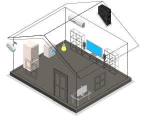

CLOSE

Choose Your Space
選擇您的室內空調
請透過以下選項找出最接近您的居家條件，我們提供了坪數、挑高、頂樓、西曬樓層以及冷氣機種選擇功能，希望找到最適合您的室內空調。
註1：此為一般使用情況下之建議結果, 特殊或營業場所不含在此內。
註2：高熱源環境 (如人數多或室內陳列因素等)，建議提高冷房額定能力之需求。
前往挑選
Measuring
丈量您的空間
步驟一，請選擇適合您的丈量方式
01


Length, width and height
選擇長寬高計算
02
Room size
選擇坪數計算
Top Floor
選擇您的空間
若是房間位於頂樓，又未做好隔熱措施，牆壁將在白天吸收大量太陽直射的熱量，在晚上時熱量就開始散發入內，在夏季顯得更為炎熱
步驟二，請選擇以下條件，我們將試算出最適合您的冷氣需求
Western Sun
選擇您的空間
若房間向西，下午時太陽將長時間直射家中，直接透過窗戶傳入，且牆壁在此時正大量吸收熱量，晚上熱量就會散發入內，因此溫度比其他房間高很多。
步驟三，請選擇以下條件，我們將試算出最適合您的冷氣需求
Type
選擇您的冷氣需求
步驟四，請選擇以下條件，我們將挑選出最適合您的商品